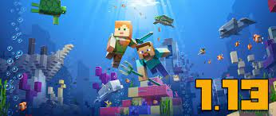
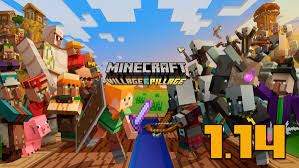

Mojang Studios - ця компанія-розробник інді-ігр, а також розвиває популярну гру Minecraft. Офіс заходиться в Швеції.
Ігри, які розробила студія Mojang
Майнкрафт створений шведським розробником Маркусом Перссоном. Маркус опоблікував початкову версію в 2009 році. В 2011 році вийшла стабільна версія для комп'ютера. Зараз майнкрафт можна пограти на ігрових приставках, комп'ютері і телефоні. Гра створена на Java.
| Зображення | Версія | Що нового появилось |
|---|---|---|
 |
1.12 | В цій обнові добавили різні блоки: бетон, цемент. Також нових мобів: попугай, ілюзор. Ще обновилиовили енд в якому тепер є елітри і шалкера. |
|  | 1.13 | В цій обнові добавили різних підводних мобів, один із них потопельних. Ця обнова створила великий підводний світ. |
|  | 1.14 | В цій обнові сфокусувались на зміні сіл. Добавили дуже багато різних блоків. Добавили плавильну піч і коптильню. |